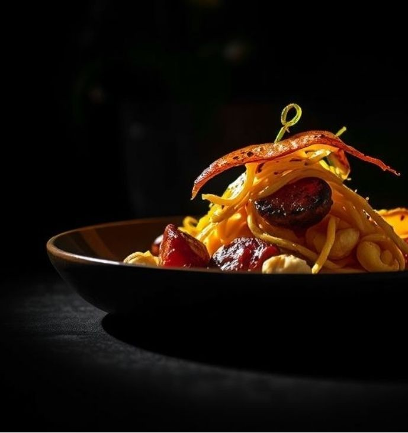
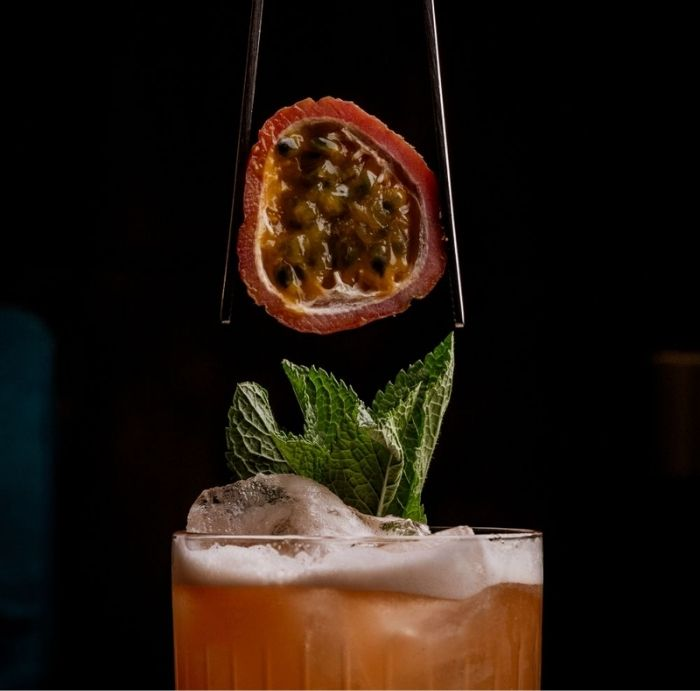

LOCATION
61 KING ST W, TORONTO,
ON M5V 2J4, CANADA
RESERVATIONS
BOOK THE INNUP TO THREE
MONTHS IN ADVANCE
CONTACT
INFO@SOMA.COM
514-55-0199
RESTAURANT
SOMA IS A UNIQUE ITALIAN DINING EXPERIENCE IN THE HEART OF TORONTO, WHERE REFINED GASTRONOMY MEETS IMMERSIVE DESIGN. LED BY A RENOWNED CHEF, SOMA COMBINES AUTHENTIC ITALIAN FLAVORS, INNOVATIVE CUISINE, AND SOPHISTICATED INTERIORS TO CREATE AN UNFORGETTABLE CULINARY JOURNEY.
EVERY DINNER BECOMES A MEMORY.


THE EXPERIENCE
AT SOMA, DINING IS MORE THAN A MEAL — IT IS AN EXPERIENCE. FROM THE ELEGANT ATMOSPHERE TO THE ARTFULLY CRAFTED DISHES, EVERY DETAIL IS DESIGNED TO ENGAGE THE SENSES AND TRANSPORT YOU INTO A WORLD WHERE ITALIAN GASTRONOMY, CREATIVITY, AND LUXURY COME TOGETHER.